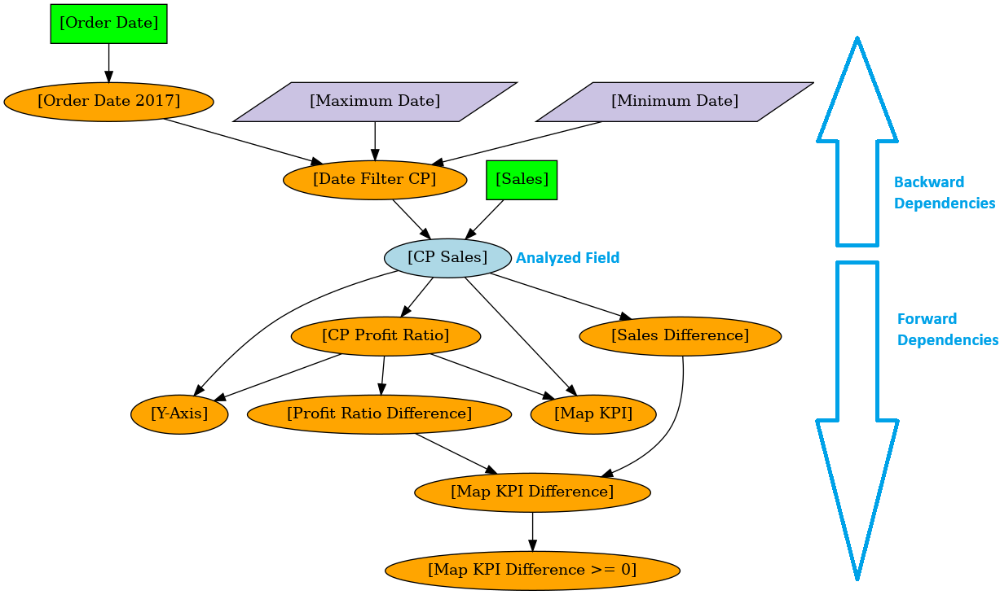
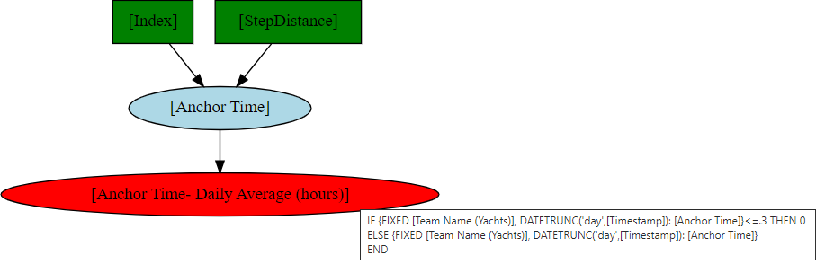

Output Files¶
Output Folder Structure¶
The output files are structured as follows:
<Root Folder>/
├── Fields/
│ └── <Workbook Name>.xlsx
├── Graphs/
│ ├── <Data Source Name 1>
│ │ ├── <Field Name 1>.png
│ │ ├── <Field Name 1>.svg
│ │ ├── <Field Name 2>.png
│ │ ├── <Field Name 2>.svg
│ │ └── ...
│ ├── <Data Source Name 2>
│ │ ├── <Field Name 1>.png
│ │ ├── <Field Name 1>.svg
│ │ ├── <Field Name 2>.png
│ │ ├── <Field Name 2>.svg
│ │ └── ...
│ ├── Parameters
│ │ ├── <Parameter Name 1>.png
│ │ ├── <Parameter Name 1>.svg
│ │ ├── <Parameter Name 2>.png
│ │ ├── <Parameter Name 2>.svg
│ │ └── ...
│ └── Sheets
│ │ ├── <Sheet Name 1>.png
│ │ ├── <Sheet Name 1>.svg
│ │ ├── <Sheet Name 2>.png
│ │ ├── <Sheet Name 2>.svg
│ │ └── ...
└── log_file.log (Optional, only for Flask app)
Clarifications w.r.t. this folder structure:
<Root Folder>depends on how the tool is run (for more details check Usage)Executable: <Workbook Folder>/<Workbook Name> Files
Flask: <Workbook Name> Files.zip (saved in browser default download folder)
<Workbook Name>: name of the selected workbook<Data Source Name 1>: name of the first data source used in the workbook<Field Name 1>: name of the first (calculated) field from the parent data source used in the workbookFor parameter and sheet dependency graphs 2 separate subfolders
ParametersandSheetsare usedlog_file.logis generated only when the tool is run via the Flask app. In other cases, the output is displayed directly in the command line instead of being written to a log file.
Dependency Graphs¶
The images below show some examples of output dependency graphs.
The first example is a more complex example of a field with both backward and forward dependencies (explanation: see below):
{kind=link}
The second example is simpler but shows 1 additional node type that represents a Level of Detail (LOD) expression (red ellipse, SVG tooltip with calculation also shown):
{kind=link}
In general, the output images can be read as follows:
Green rectangles represent data source fields (no dependencies)
Orange ellipses represent calculated fields (at least 1 dependency)
Red ellipses represent calculated fields (at least 1 dependency) that contain Level of Detail (LOD) Expressions
Purple parallellograms represent parameters
Light blue ellipse represents the analyzed field (in this case
CP Sales)Elements above the analyzed field are backward dependencies, meaning that they are required for the calculation of it
Elements below the analyzed field are forward dependencies, meaning that each of these elements directly or indirectly makes use of the
CP Salescalculated field.The levels of the graphs represent the dependency level of the different elements. (NOTE: NOT TRUE, PLEASE REWRITE) * Backward dependencies are numbered -1 (for direct backward dependencies), -2, etc. * Forward dependencies are numbered 1 (for direct forward dependencies), 2, etc.
Field dependency graphs are exported as PNG and SVG files. The advantage of the SVG files compared to the PNG files is the ability to show the field calculations in the node tooltips, which is not possible for the PNG file.
Field Metadata¶
The output file Fields\<Workbook Name>.xlsx contains 2 sheets fields and
dependencies. Below their column descriptions are described in detail.
Column definitions for “fields” sheet¶
Column Name |
Data Type |
Description |
|---|---|---|
source_label |
String |
Source name |
field_label |
String |
Field name |
source_field_label |
String |
Combination of source and field name |
field_datatype |
String |
Values: boolean, integer, real, date, string |
field_role |
String |
Values: dimension, measure |
field_type |
String |
Values: nominal, ordinal, quantitative |
field_aliases |
String |
Field aliases |
field_description |
String |
Field description |
field_hidden |
Integer |
Values: 0 (no), 1 (yes) |
field_worksheets |
String |
List of sheets where the field is used |
field_category |
String |
Values: Field, Calculated Field, Calculated Field (LOD), Parameter |
field_calculation_cleaned |
String |
Field cleaned calculation expression |
source_field_dependencies |
String |
List of data source field (backward) dependencies |
field_backward_dependencies_max_level |
Integer |
Maximum backwards dependency level of the field (<= 0) |
field_forward_dependencies_max_level |
Integer |
Maximum backwards dependency level of the field (>= 0) |
n_backward_dependencies |
Integer |
Number of backward dependency edges |
n_forward_dependencies |
Integer |
Number of forward dependency edges |
n_backward_dependencies_field |
Integer |
Number of data source field (backward) dependencies (length of source_field_dependencies list) |
n_backward_dependencies_lod |
Integer |
Number of backward dependencies that are Level of Detail (LOD) expressions |
n_worksheet_dependencies |
Integer |
Number of sheet (forward) dependencies (length of field_worksheets) |
flag_unused |
Integer |
Flag field is unused (1 = yes; 0 = no) |
Column definitions for “dependencies” sheet¶
Column Name |
Data Type |
Description |
|---|---|---|
source_label |
String |
Source name |
field_label |
String |
Field name |
source_field_label |
String |
Combination of source and field name |
field_category |
String |
Values: Field, Calculated Field, Calculated Field (LOD), Parameter |
dependency_from |
String |
Source node of a connection in the dependency graph |
dependency_to |
String |
Target node of a connection in the dependency graph |
dependency_level |
String |
Direction and level of dependency between the edge and the source field |
dependency_category |
String |
Dependency type (values: Field, Calculated Field, Calculated Field (LOD), Parameter, Sheet) |
dependency_worksheets_overlap |
Integer |
Number of overlapping sheets between source field and dependency |